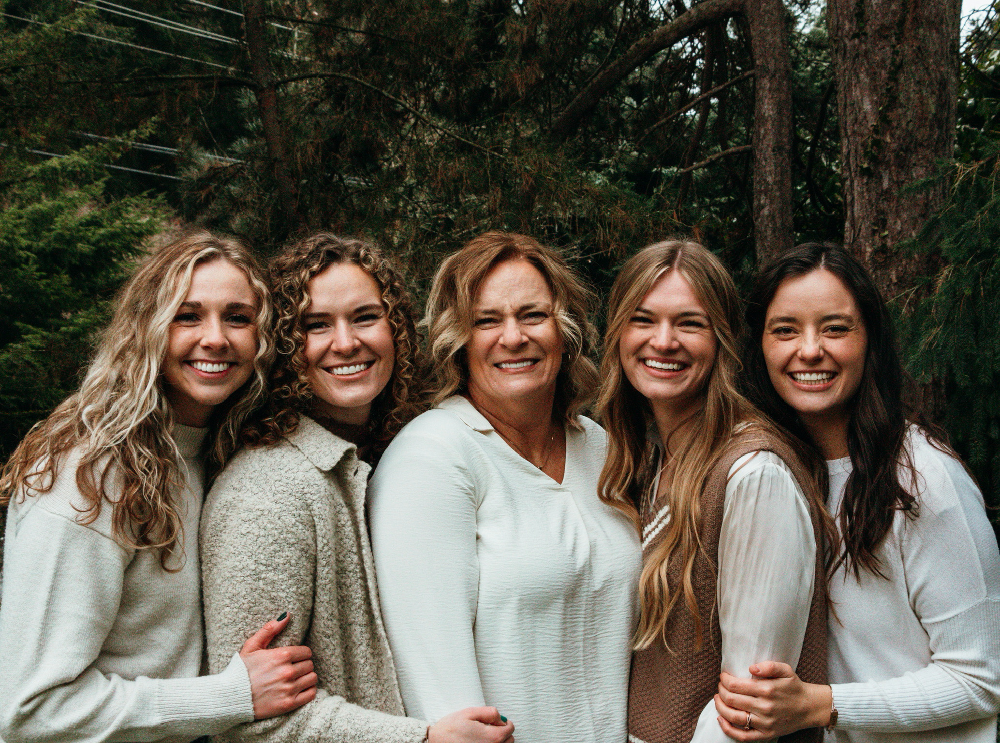

Handmade Jewelry: bracelets, anklets, earrings, and necklaces
We make handmade jewelry from Miyuki beads is a beautiful and intricate craft. Miyuki beads are small, uniform glass beads that are highly valued for their high quality and precision in size and shape. These beads come in a wide variety of colors, finishes, and styles, making them a popular choice for creating unique and eye-catching jewelry pieces.
Meet the 5 Pond Girls!

Tracy
Often referred to as "Mama Pond", Tracy's attention to detail and intention in netwroking has been a huge asset to our blossoming business.
She enjoys spending time with her family, traveling, playing games, and being out on the boat. We adore this mama of ours.
Annie
Annie brings experience and insight into how we can develop and scale Ponds & Puddles for the future.
She is the mom to the most loved puddles, her sweet boys. We love our Annie B.
Renee
Renee is the mastermind behind our small business. She has created and designed many of our braclets.
She has recently moved to Salt Lake City, UT after spending a couple of years out on the East Coast. We are happy to have her closer and we love her enthusiasm here.
Maddie
Maddie is the newest Pond in our family and she is the best addition. Maddie dreams of the day when she can have her own classroom and inspire her students to be creative.
We have Maddie to thank for all of the beautiful pictures of our products. She is so talented.
Maddy
One Madison is not enough for us! There are 2! Maddy is the machine behind all of the social media work that takes place.
She has great customer engagement and loves doing business with her mom and sisters. Maddy is passionate about the outdoors and loves to travel! We love having her on our team.
Check out this video to see the best way to measure your wrist or ankle in order to get the perfect size!